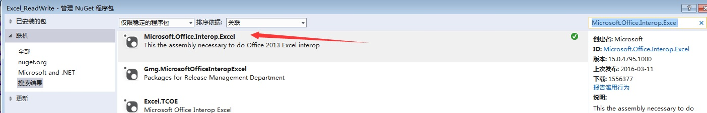
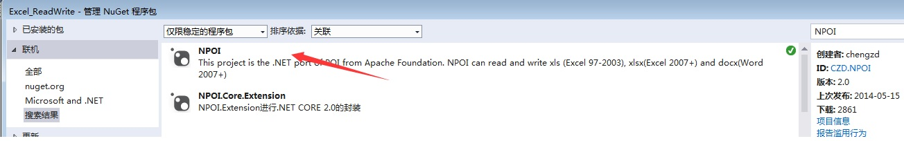
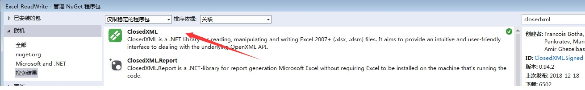
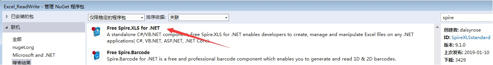

1 使用Office自带的库
前提是本机须安装office才能运行，且不同的office版本之间可能会有兼容问题，从Nuget下载 Microsoft.Office.Interop.Excel

读写代码如下：
1 using Microsoft.Office.Interop.Excel;
2 using Excel = Microsoft.Office.Interop.Excel;
3
4 private void btn_Office_Click(object sender, EventArgs e)
5 {
6 string importExcelPath = "E:\\import.xlsx";
7 string exportExcelPath = "E:\\export.xlsx";
8 //创建
9 Excel.Application xlApp = new Excel.Application();
10 xlApp.DisplayAlerts = false;
11 xlApp.Visible = false;
12 xlApp.ScreenUpdating = false;
13 //打开Excel
14 Excel.Workbook xlsWorkBook = xlApp.Workbooks.Open(importExcelPath, System.Type.Missing, System.Type.Missing, System.Type.Missing,
15 System.Type.Missing, System.Type.Missing, System.Type.Missing, System.Type.Missing, System.Type.Missing, System.Type.Missing, System.Type.Missing,
16 System.Type.Missing, System.Type.Missing, System.Type.Missing, System.Type.Missing);
17
18 //处理数据过程，更多操作方法自行百度
19 Excel.Worksheet sheet = xlsWorkBook.Worksheets[1];//工作薄从1开始，不是0
20 sheet.Cells[1, 1] = "test";
21
22 //另存
23 xlsWorkBook.SaveAs(exportExcelPath, Type.Missing, Type.Missing, Type.Missing, Type.Missing, Type.Missing, XlSaveAsAccessMode.xlNoChange,
24 Type.Missing, Type.Missing, Type.Missing, Type.Missing, Type.Missing);
25 //关闭Excel进程
26 ClosePro(xlApp, xlsWorkBook);
27 }
28
29 public void ClosePro(Excel.Application xlApp, Excel.Workbook xlsWorkBook)
30 {
31 if (xlsWorkBook != null)
32 xlsWorkBook.Close(true, Type.Missing, Type.Missing);
33 xlApp.Quit();
34 // 安全回收进程
35 System.GC.GetGeneration(xlApp);
36 IntPtr t = new IntPtr(xlApp.Hwnd); //获取句柄
37 int k = 0;
38 GetWindowThreadProcessId(t, out k); //获取进程唯一标志
39 System.Diagnostics.Process p = System.Diagnostics.Process.GetProcessById(k);
40 p.Kill(); //关闭进程
41 }2. 使用NPOI
地址：https://github.com/tonyqus/npoi
在不安装office的时候也是可以读写的，速度很快，从Nuget下载 NPOI

读写代码如下：
1 using System.IO;
2 using NPOI;
3 using NPOI.SS.UserModel;
4
5 private void btn_NPOI_Click(object sender, EventArgs e)
6 {
7 string importExcelPath = "E:\\import.xlsx";
8 string exportExcelPath = "E:\\export.xlsx";
9 IWorkbook workbook = WorkbookFactory.Create(importExcelPath);
10 ISheet sheet = workbook.GetSheetAt(0);//获取第一个工作薄
11 IRow row = (IRow)sheet.GetRow(0);//获取第一行
12
13 //设置第一行第一列值,更多方法请参考源官方Demo
14 row.CreateCell(0).SetCellValue("test");//设置第一行第一列值
15
16 //导出excel
17 FileStream fs = new FileStream(exportExcelPath, FileMode.Create, FileAccess.ReadWrite);
18 workbook.Write(fs);
19 fs.Close();
20 }3. 使用ClosedXml
地址：https://github.com/ClosedXML/ClosedXML
从Nuget下载 ClosedXml

读写代码如下：
1 using ClosedXML;
2 using ClosedXML.Excel;
3
4 private void btn_ClosedXML_Click(object sender, EventArgs e)
5 {
6 string importExcelPath = "E:\\import.xlsx";
7 string exportExcelPath = "E:\\export.xlsx";
8 var workbook = new XLWorkbook(importExcelPath);
9
10 IXLWorksheet sheet = workbook.Worksheet(1);//这个库也是从1开始
11 //设置第一行第一列值,更多方法请参考官方Demo
12 sheet.Cell(1, 1).Value = "test";//该方法也是从1开始，非0
13
14 workbook.SaveAs(exportExcelPath);
15 }4. 使用 spire.xls
地址：https://www.e-iceblue.com/Introduce/free-xls-component.html
spire分免费和收费，无特殊需求用免费即可
从Nuget下载 Free Spire.xls For .NET

读写代码如下：
1 using Spire.Xls;
2
3 private void btnSpire_Click(object sender, EventArgs e)
4 {
5 string importExcelPath = "E:\\import.xlsx";
6 string exportExcelPath = "E:\\export.xlsx";
7
8 Spire.Xls.Workbook workbook = new Spire.Xls.Workbook();
9 workbook.LoadFromFile(importExcelPath);
10 //处理Excel数据，更多请参考官方Demo
11 Spire.Xls.Worksheet sheet = workbook.Worksheets[0];
12 sheet.Range[1,1].Text = "test";//该方法也是从1开始，非0
13
14 workbook.SaveToFile(exportExcelPath);
15 }5. EPPLUS
地址：https://github.com/pruiz/EPPlus/tree/master/EPPlus
没用过这个，暂时就不做介绍了